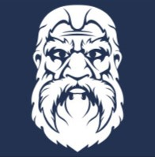

Em Dungeons & Dragons, os jogadores formam um grupo de aventureiros que juntos exploram mundos de fantasia, enquanto embarcam em buscas épicas e sobem de nível de experiência. O Dungeon Master (também conhecido como DM) é o juiz e o narrador do jogo. Não se ganha nem perde em D&D — pelo menos não da maneira convencional.
Em sua essência, D&D é um jogo focado em narrativas. Os dados são apenas auxiliares. Todas as decisões são tomadas por você, desde sua aparência, como você age e até o que acontece a seguir.
As criações coletivas presentes em seu jogo de D&D constroem histórias que você repetirá várias e várias vezes — de acontecimentos lendários a incidentes absurdos que o farão rir anos depois.
Divirta-se e lembre-se da regra de ouro — nunca divida o grupo!
Em D&D, cada jogador cria um personagem heroico para representá-lo no jogo: ele pode ser um guerreiro habilidoso, um clérigo devoto, um ladino mortal, um mago conjurador ou algo completamente diferente!
Juntos, o Dungeon Master e os jogadores criam uma história emocionante, de aventureiros ousados que enfrentam perigos fatais. Mesmo que o grupo não complete a aventura com sucesso, a diversão e as lembranças fazem de todos vencedores.
Como já mencionado, todas ações são feitas pelo jogadores, porém cabe ao mestre (DM), decidir se a ação vai ser um sucesso ou um fracasso, para isso, os jogadorem usam dados, normalmente de 20 lados, onde cada número representa um nível de sucesso diferente, sendo 1 muito ruim e 20 muito bom.
O primeiro passo para a criação de um personagem é decidir sua raça. Com isso em mente, trouxemos quatro das raças mais populares para você ter certeza de que esta fazendo a melhor escolha.

|  Anões |
 Elfos |
Tieflings |
 Halflings |
|---|